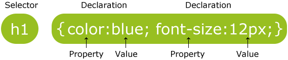

CSS Syntax and Selectors
CSS Syntax
A CSS rule-set consists of a selector and a declaration block:

The selector points to the HTML element you want to style.
The declaration block contains one or more declarations separated by semicolons.
Each declaration includes a CSS property name and a value, separated by a colon.
A CSS declaration always ends with a semicolon, and declaration blocks are surrounded by curly braces.
In the following example all p elements will be center-aligned, with a red text color
Example
p {
color: red;
text-align: center;
}
Results
This is a parragraph with center text-aling and red color
CSS Selectors
CSS selectors are used to "find" (or select) HTML elements based on their element name, id, class, attribute, and more.
The element Selector
The element selector selects elements based on the element name.
You can select all p elements on a page like this (in this case, all p elements will be center-aligned, with a red text color):
Example
p {
color: red;
text-align: center;
}
The id Selector
The id selector uses the id attribute of an HTML element to select a specific element.
The id of an element should be unique within a page, so the id selector is used to select one unique element!
To select an element with a specific id, write a hash (#) character, followed by the id of the element.
The style rule below will be applied to the HTML element with id="para1":
Example
#para1 {
color: red;
text-align: center;
}
Note: An id name cannot start with a number!
The class Selector
The class selector selects elements with a specific class attribute.
To select elements with a specific class, write a period (.) character, followed by the name of the class.
In the example below, all HTML elements with class="center" will be red and center-aligned:
Example
.center {
text-align: center;
color: red;
}
You can also specify that only specific HTML elements should be affected by a class.
In the example below, only p elements with class="center" will be center-aligned:
Example
p.center {
text-align: center;
color: red;
}
HTML elements can also refer to more than one class.
In the example below, the p element will be styled according to class="center" and to class="large":
Example
<p class="center large">This paragraph refers to two classes.</p>
Note: A class name cannot start with a number!
Grouping Selectors
If you have elements with the same style definitions, like this:
h1 {
text-align: center;
color: red;
}
h2 {
text-align: center;
color: red;
}
p {
text-align: center;
color: red;
}
It will be better to group the selectors, to minimize the code.
To group selectors, separate each selector with a comma.
In the example below we have grouped the selectors from the code above:
Example
h1, h2, p {
text-align: center;
color: red;
}
CSS Comments
Comments are used to explain the code, and may help when you edit the source code at a later date.
Comments are ignored by browsers.
A CSS comment starts with /* and ends with */. Comments can also span multiple lines:
Example
p {
color: red;
/* This is a single-line comment */
text-align: center;
}
/* This is
a multi-line
comment */